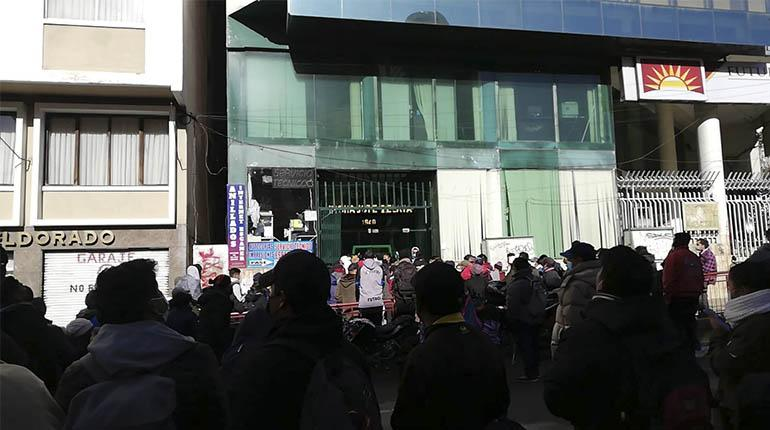
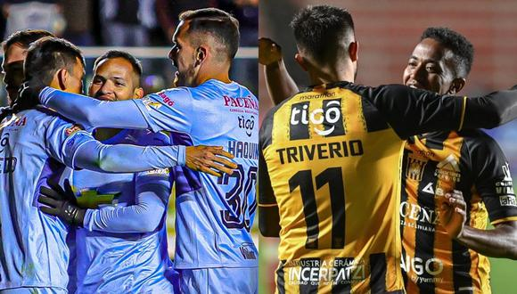
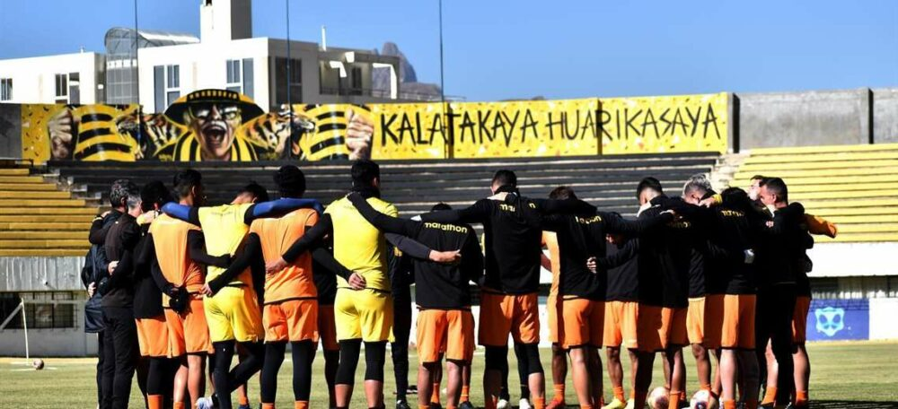

The Strongest gana y es finalista del torneo AperturaThe Strongest venció a Palmaflor (2-1) en Cochabamba y selló su boleto para la final del torneo Apertura. El cuadro atigrado mostró este miércoles su contundencia en la parte ofensiva y validó lo que hizo el pasado sábado en La Paz, donde también ganó por el mismo marcador. El cuadro valluno mereció mejor suerte por lo expuesto en el campo de juego, pero la definición no estuvo de su lado. Mientras que el Tigre, fiel a su característica luchó, sufrió y luego celebró la opción de buscar un título más en su historia. El primer tiempo fue para el local que tuvo el apoyo de cerca de 25.000 personas que estuvieron en el estadio Félix Capriles y alrededor de 5.000 hinchas atigrados se dieron cita en el principal escenario de Cochabamba. El defensa de Palmaflor, Joaquín Lencínas, tuvo la mejor opción cuando definió con el pie izquierdo tras una mala salida del guardameta Guillermo Viscarra, pero de la línea salvó el defensa Adrián Jusino (27’PT). En el segundo tiempo, el Tigre aprovechó un tiro de esquina, luego de algunos rebotes, Enrique Triverio aprovechó para puntear y ganar a Gustavo Salvatierra (8’ST). Palmaflor buscó la igualdad y tras un remate al travesaño de Adalid Terrazas (11’ST). Fue el brasileño Igor Soares que puso el empate tras un lanzamiento desde el punto penal (15’ST). Cuando todo parecía que llegaba el tanto de la victoria del local. En una posición dudosa, Triverio eludió a Salvatierra y le cometió infracción dentro del área. Rodrigo Amaral puso el definitivo 1-2 (37’ST). El Tigre espera por el ganador entre Bolívar y Blooming, que jugarán este miércoles, a las 20.00. |
Entradas para el clásico paceño se agotan y la policía se declara en "alerta" por la reventa a "precios muy elevados"Este sábado las entradas para la gran final del Torneo Apertura que disputarán este domingo entre los equipos paceños de Bolívar y The Strongest se agotaron. La Policía Boliviana informó que está en "alerta" por la reventa de entradas al clásico paceño a "precios muy elevados". Además, la institución verde olivo recalcó que la reventa de entradas a precios muy superiores a su precio original constituye el delito de agio. "La FELCC y nuestras Unidades Policiales se encuentran ALERTAS ante cualquier denuncia de VENTA DE ENTRADAS A PRECIOS MUY ELEVADOS para el partido Bolivar Vs. TheStrongest lo cual constituye un delito de Agio (al ser las entradas valores negociables) aprovechado por personas que lucran con la pasión deportiva (sic)", señala el mensaje de la Policía. Durante la mañana de este sábado, un grupo hinchas bloqueó el ingreso al viaducto del nudo Villazón para exigir la venta de entradas. Otro numeroso boque de hinchas protesta en las boleterías del estadio Hernando Siles, donde este domingo se jugará la final del torneo. Ayer, se reportaron largas filas en el estadio Hernando Siles en los puntos habilitados para la compra de entradas a la final del Torneo Apertura entre Bolívar y The Strongest. Víctor Roque, Gerente General de SuperTickek, explicó que solo puso a la venta 1.772 pases y el restó los distribuyó la Federación Boliviana de Futbol (FBF). |
Bolívar vs. The Strongest EN VIVO por la final Copa Tigo: hora y canalesBolívar vs. The Strongest EN VIVO ONLINE se enfrentan en el partido correspondiente a la final del Torneo Apertura Copa Tigo Bolivia 2022 en el estadio Hernando Siles de La Paz. El encuentro se jugará el domingo 12 de junio desde las 14:00 (hora de Bolivia) y 13:00 (hora de Perú, Colombia). En partidos de ida y vuelta por las semifinales, The Strongest eliminó a Atlético Palmaflor, mientras que Bolívar hizo lo propio con Blooming. La final del fútbol boliviano entre los dos equipos más ganadores, será a partido único. No solo juegan una estrella más, también la posibilidad de asegurar un lugar en torneos internacional. El campeón del torneo Apertura accederá como Bolivia 1 a la Copa Libertadores y el subcampeón como Bolivia 1 en la Sudamericana. Bolívar es el equipo más ganador del fútbol boliviano con 29 títulos, seguido de The Strongest con 15. Los celestes no logran un título desde el 2019, mientras que el equipo atigrado lo logó por última vez la temporada 2016. DÓNDE VER BOLÍVAR VS. THE STRONGEST TIGO Sports Bolivia será el canal encargado de transmitir el encuentro entre Bolívar y The Strongest por la final del Torneo Apertura 2022. Para Argentina, el encuentro será transmitido por DIRECTV HD Canal 635. También puede seguir la transmisión online a través de El Comercio. |
The Strongest canta y baila en la previa de la gran final del torneo“Que el domingo en el Siles, la vuelta vamos a dar”, cantaron los jugadores de The Strongest en el cierre de prácticas de este sábado en su complejo de Achumani en la previa a la gran final del torneo Apertura. El partido entre atigrados y celestes será este domingo desde las 16:00 en el estadio Hernando Siles, de La Paz, que estará lleno pues las entradas fueron agotadas en su totalidad. El equipo que dirige el argentino Cristhian Díaz cerró sus entrenamientos la mañana de este sábado en su complejo de Achumani, donde al finalizar estuvieron acompañados por una guitarra donde se alegraron cantando y aplaudiendo. The Strongest viene siendo subcampeón durante varios torneos y los jugadores han manifestado que están mentalizados en ganarle a su clásico rival. |